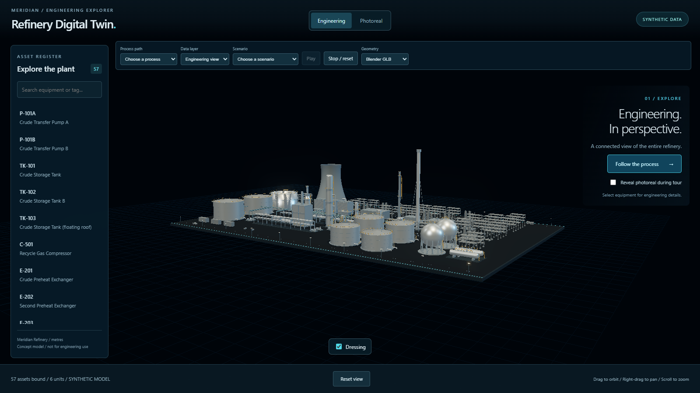
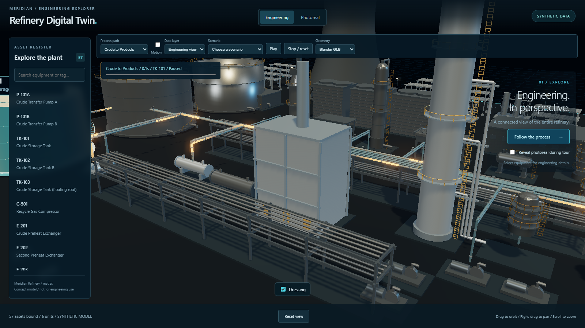
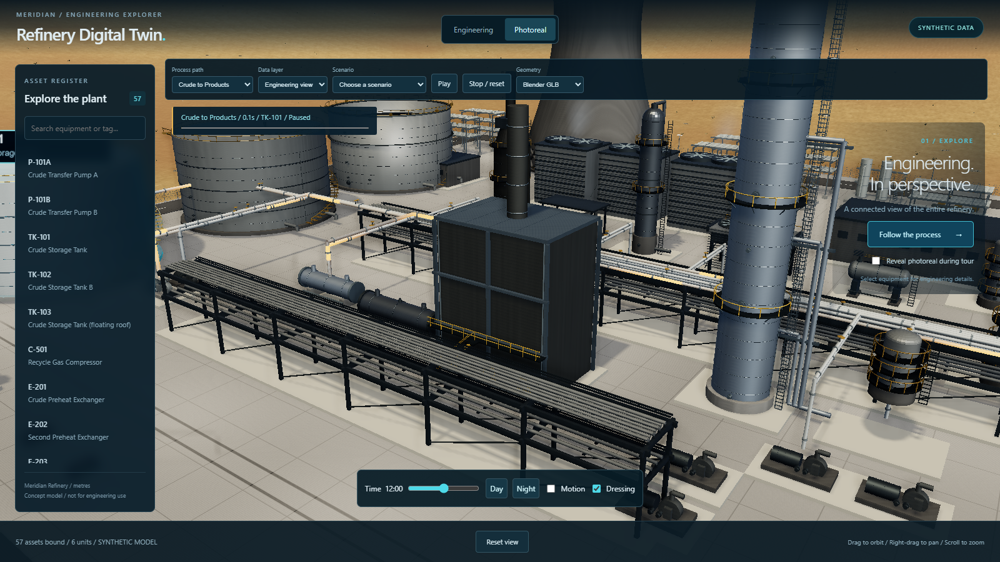
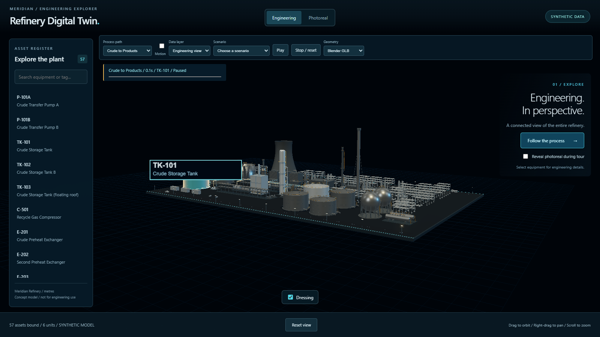
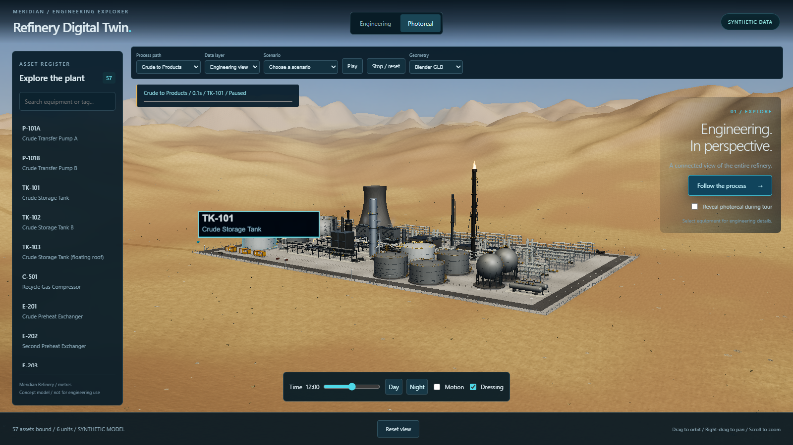
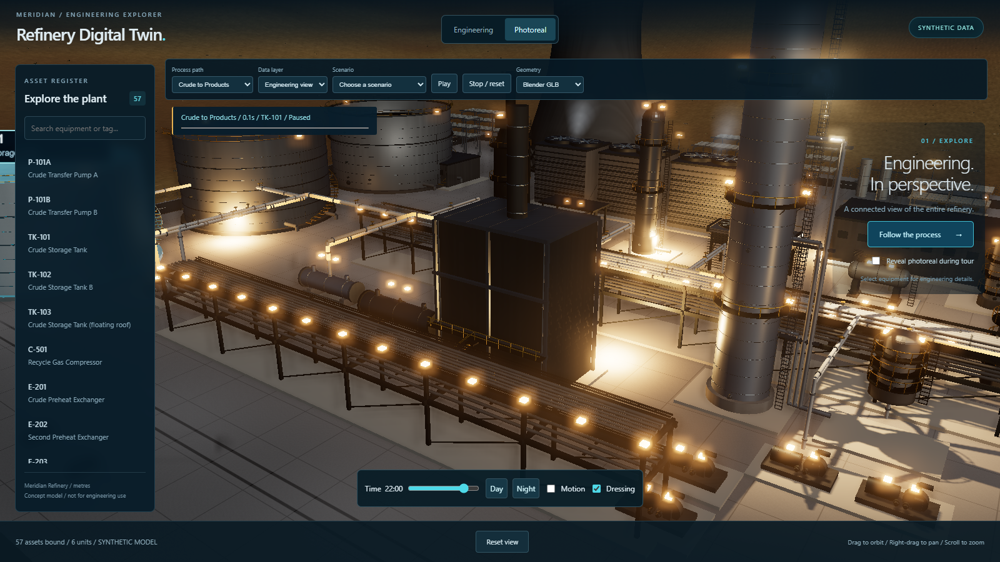
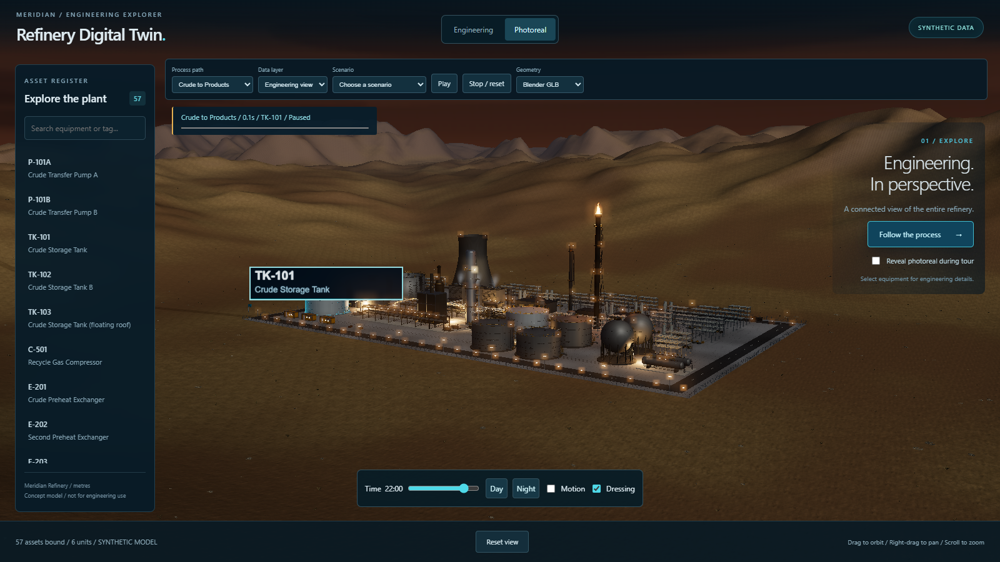

Two independent engineering candidates. Neither has replaced the approved baseline.
Engineering candidates

Task 3 correction: grey plant dressing; landscape remains photoreal only.Task 4: instanced physical pipes; no active process.
Active path · CAM-2

Engineering, fixed phase

Photoreal day, fixed phase
Active path · CAM-6

Engineering, fixed phase

Photoreal day, fixed phase
Night


Full guided tour
Full viewport captured frame-by-frame at 60 samples per second, including HUD captions; H.264 CRF 18. Offline capture timing does not affect performance metrics.